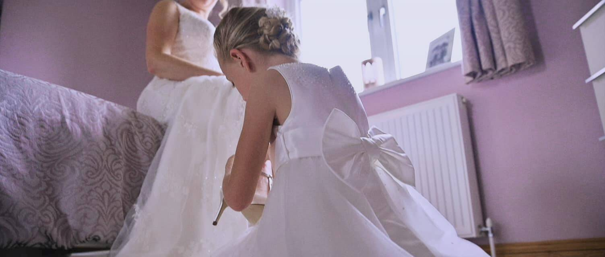
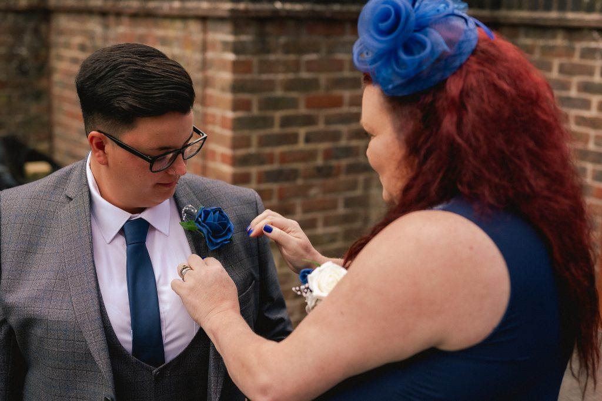
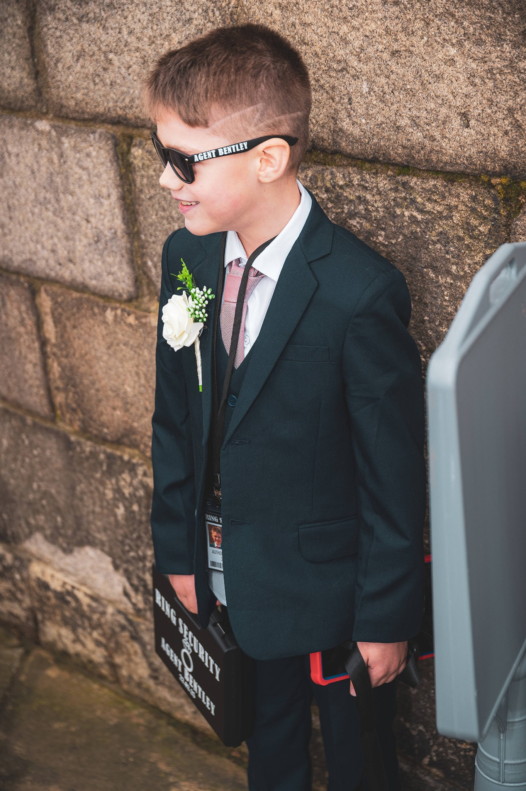
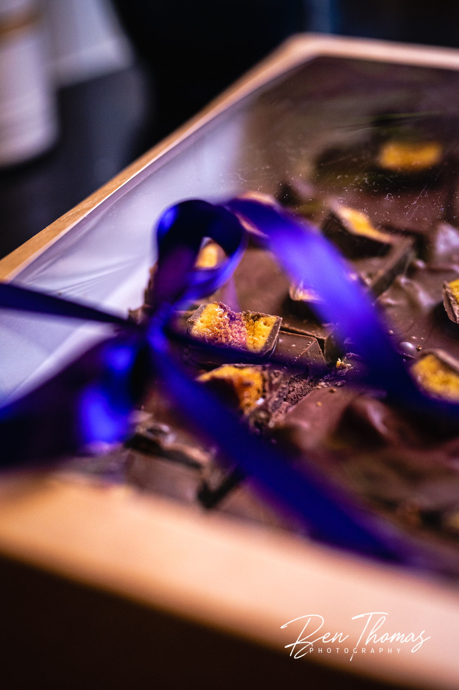

01
The build-up
Outfits, finishing touches, deep breaths, laughter and the “is it time yet?” moments.

Wedding photography in Norfolk, Suffolk and across the UK
Natural, relaxed storytelling for couples who want their photographs to feel like them — no awkward posing, forced smiles or weird vibes.
Not models. Not staged.
I photograph the real moments, the quiet ones and the absolute joy on the dance floor. I’ll guide you when you need it, blend in when you don’t, and keep everything feeling calm and comfortable.
You do not need to know how to pose or what to do with your hands. I’ll offer gentle direction when it helps, then give you space to enjoy the people and moments around you.
The result is a gallery full of warm, honest photographs that bring back how the day actually felt.

The whole story
From the nervous build-up to the questionable dance moves, every part of your wedding adds something to the story.
Outfits, finishing touches, deep breaths, laughter and the “is it time yet?” moments.
Arrivals, vows, rings, first kisses, confetti and that just-married feeling.
Hugs, glances, family chaos and reactions you might otherwise have missed.
Speeches, happy tears, first dances and every shape thrown on the dance floor.
A few favourites
A mix of candid moments, little details and the kind of photographs you will still love years from now.





What to expect
Send over your date, venue and the kind of coverage you are looking for.
A relaxed pre-wedding chat and practical help to make sure the photography fits your day.
I’ll guide you when needed, blend in when not, and capture the day without taking it over.
Sneak peeks of some of my favourites arrive within days, followed by your full private gallery.
Photography packages
Each option is designed to feel straightforward, relaxed and flexible — with no pressure to turn your wedding into a photoshoot.
Short and meaningful
Ideal for: smaller weddings, shorter timelines or couples who want the key moments beautifully captured.
A fuller story
Ideal for: couples who want more of the day covered but do not need the evening party photographed.
The complete day
Ideal for: couples who want the full story captured from preparation through to the party.
Make it yours
Every wedding is different, so these are not pushed as compulsory add-ons. They are simply useful options that can make your coverage, finished photographs or wedding experience feel even more personal.
Turn your favourite photographs into properly finished, wall-worthy prints. Sizes, paper choices and suitable images can all be discussed once you know which moments you love most.
A professionally printed album designed by Ben around the story of your day. It is made to be handled, shared and revisited rather than left hidden in a digital folder.
A relaxed pre-wedding session that helps you get used to the camera before the big day. It can also give you photographs for invitations, your wedding website or simply your home.
A helpful option for larger weddings, multiple locations or packed timelines. Two photographers mean more angles, more candid moments and wider coverage while the day unfolds.
Ben made us both feel at ease and captured every moment — it honestly felt like having an extra guest there.
Couldn’t have asked for a calmer photographer on the day.
Fancy seeing how this could look on your day?
I’m happy to meet over a coffee — on me — or keep it quick and easy online. No pressure, no hard sell and definitely no weird vibes.